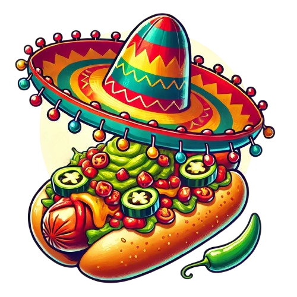

O El Pero Caliente nasceu do sonho de uma jovem mexicana que, ao morar no Brasil, decidiu compartilhar a paixão pela culinária e cultura de seu país com todos ao seu redor. Crescida entre os aromas e sabores intensos das ruas do México, ela trouxe consigo a vontade de mostrar ao mundo o quanto um simples hot dog pode ser transformado com um toque autêntico e cheio de vida.
Aqui, cada hot dog conta uma história – dos molhos caseiros às especiarias tradicionais, tudo é preparado com carinho e dedicação. Combinamos ingredientes típicos como jalapeños, guacamole fresco e tortillas crocantes para criar uma explosão de sabores que reflete a alma vibrante do México.
Nosso restaurante é mais do que um lugar para comer, é uma extensão desse sonho: criar um espaço onde amigos, famílias e amantes da boa comida possam se reunir, se divertir e conhecer um pouco da cultura mexicana. Para nós, cada refeição é uma oportunidade de partilhar esse pedaço do México com você, em um ambiente descontraído e acolhedor, cheio de cores e alegria.
Venha experimentar algo diferente, saborear o México no Brasil e fazer parte dessa história que começou com um sonho e continua a ser escrita, mordida a mordida.
